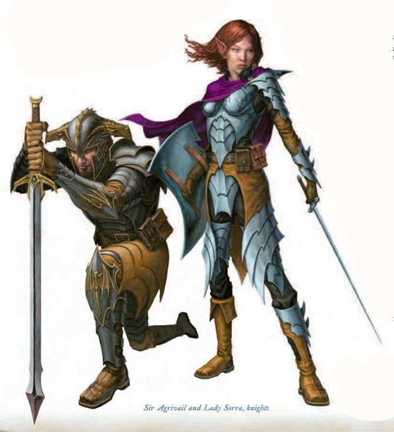

骑士
骑士（Knight）
"投降还是光荣战死，选择权在你。"
——勇猛的阿奇博德

骑士是骄傲而技艺熟练的肉搏战斗者，他们以荣誉与骑士精神之名而战。骑士可以向一名对手发出挑战，要求决斗，激起对手的骄傲与自尊心，迫使对方采取行动。骑士善于使用重型盔甲，盾牌与防御策略，使他有能力扰乱敌人的计划。只有最有经验的游荡者与武僧才能避开骑士的防御，攻击他的盟友。一支由法师，术士以及其他轻甲单位组成的队伍会在一名骑士的协助下更加强大。当骑士吸引了敌人的注意，他的盟友就无需顾虑会受到攻击，发挥他们的天赋与能力。
种族：大多数骑士是矮人，人类，还有半精灵。矮人骑士趋向秩序，与其种族特有的军国主义倾向相结合，他们的战斗组织为支持正义而献身，遵从荣誉的规章。矮人骑士也会在各个殖民地之间漫游，执行法律，保护弱小的部落，将正义带向各处。人类，伴随着他们大量的王国与帝国，从而产生了大量为了国王与国家而战，为个人荣誉而战，或是为赏金而战斗的骑士。一些半精灵也参加了这样的服务，并也能在类似的组织中获得高位。侏儒与半身人鲜有成为骑士，因为骑士正直的行为守则与小个子种族通过花招与聪明点子而产生的信任背道而驰。极少数半兽人能获得成为骑士的机会，然而一旦他们成为骑士，他们天生的力量就发挥了优势。精灵骑士更为少有，因为精灵喜爱自由与变通而不是所有骑士所必须遵守的钢硬荣誉守则。
扮演：如果你打算扮演一名坚韧持久的战斗者，以他们强大的个人能力对抗敌人，骑士是一个绝佳的选择。弱小的敌人在你面前因恐惧而退缩，而强大的敌人在你激起他们的自尊而发出决斗的挑战之后，更倾向于攻击你而不是你的队友。而你善于使用盔甲与盾牌的技术使你成为一条无法攻克的防线。一旦你与敌人交战，对方就很难从你身边离开而威胁到你的盟友。如果你想成为一名冲锋在前，保护队友，对抗敌人的战斗者，骑士是一个很棒的选择。
阵营：骑士总是守序的。他们遵守行为规章的不过是他们对秩序热忱的一种表达方式。大多数骑士团的建立都是为保护王国免受侵略，或是执行法律，对抗内部的混乱。
虽然骑士注重秩序，但他们在善恶的选择上确是均等的。守序善良的骑士将秩序看作保护无辜者与弱者免受邪恶侵害的工具。守序邪恶的骑士则相信社会秩序为强者服务。守序中立的骑士憎恨混乱带来的毁灭与苦难，因此支持秩序本身。
扮演一名骑士：作为一名骑士，你努力证明自己的能力，将遵守骑士守则视为正当的生活方式，保卫你的盟友。你勇猛而善战，决不轻言放弃一项挑战。当你面对强敌，你镇定自若地发出挑战，向他的作战能力致敬，或是一一列出他被你所追缉的罪行。
信仰：骑士重视所有事物的秩序与荣誉。他们崇拜秩序之神，而追求的目标属于善良，中立还是邪恶则出自骑士个人的选择。善良的骑士信仰海若尼斯，中立的骑士追随圣·库斯伯特，邪恶的骑士，如果他们崇拜一个神祉，则会向海克斯托祈祷。海若尼斯与海克斯托的骑士因他们之间世代的争斗而闻名。对峙的军队有时会停止前进，允许这些不共戴天的仇敌在其余的战斗开始之前以死相搏。
其他职业：你尊敬圣武士的技艺与对行为规章的献身精神，尽管他们的道路与你多少有些不同。你将法师，术士，牧师，诗人这些在后方远离战斗的人视为有力的盟友；个别骑士有时会与这些职业中的一员结伴旅行。多数骑士认为野蛮人是一个精神错乱的疯子，缺乏荣誉，自律，以对及正规文明的战斗方式的训练。尽管一个技艺高超的野蛮人会因战功而勉强获得骑士尊敬。你很少重视游荡者、欺愚者，以及其他依靠隐蔽与欺骗的人。通常，你对德鲁伊，武僧以及游侠不管怎样没有特殊的感觉。总体而言，你自认为保护着那些不能穿戴重甲的冒险者（也会露出一些因此而硬要他人领情的态度）。
战斗：你在战斗中奉行两条基本原则。你善于支配战场上的空间，因为你的防御能力使对手难于从你身边穿过去攻击队伍中更脆弱的成员。你相信面对一个敌人的最好方式就是光荣地向他发起挑战，并且正大光明地杀死他，同时宣布所有的荣誉都属于你个人。当面对大量对手，你可以使其中一些感到恐惧，而挑拨其他的人攻击你而非你的盟友。你是术士，法师，诗人最好的伙伴。你控制着战场上所有的攻击，而你的重型盔甲与高额生命值使你成为最适合吸引这些打击的人选。当你在战斗中拖住对手，你的同盟就可以不被干扰地施展他们的法术与特殊能力。
一名低级的骑士类似于战士与诗人的中间体。你拥有大量生命值，高额的AC，以及一种类似诗人音乐的能力，骑士的职业特性：挑战。你可以选择一个敌人，通常来说是最具有物理威胁的，并且获得对这名敌人攻击与伤害的加值。你必须密切注意骑士的行为守则，它禁止你利用几种策略而获得优势。
你作战的方式与战士类似--只不过战士杀掉怪物，而你的主要任务是使那个怪物在战斗时远离你的盟友。也许你取得胜利会花费更长的时间，但你大量的生命值与强力的防御能力会很好地保护你。最好的情况是，你的防御使你的同盟在不成为怪物攻击目标的情况下发挥全力。队伍中的任何术士或者法师在你吸引敌人的攻击并且阻止敌人前进的时候发挥作用。
当你的等级提高，你获得控制敌人行动的能力，迫使他攻击你而非其它目标。成群出动的弱小敌人会因你的威胁而感到恐惧。即使它们穿越你的防守，它们在攻击的盟友时也会受到处罚。你骑士挑战与盾牌格挡职业特性使你善于一对一的近身战，同时在攻击检定，伤害检定，以及在对单一敌人时获得增强。如果你的队伍面对一个强大的反派或是单独而具有压倒性优势的物理性威胁，你就可以吸引怪物从而使你的盟友施展法术或是摆开阵势。
职业特征
生命骰:D１２
属性：你从高额的魅力上获益，它决定你可以使用特殊能力的次数以及DC。高额的体质使你极佳的生命值更加突出，从而发挥你保护队友的能力。力量则能提高你的战斗能力，使你作为一名战斗在前线的角色给人留下更深刻的印象。
技能：起始技能点：4×（２＋智力调整值） 升级技能点数：２＋智力调整值
本职技能：攀爬，驯养动物，威吓，跳跃，知识（王室与贵族），骑乘，游泳。
擅长武器与盔甲：骑士擅长所有的简易武器，军用武器，所有的盔甲（轻型，中型，重型）以及盾牌（除去塔盾）。
|
等级 |
基本攻击 |
强韧 |
反射 |
意志 |
特殊能力 |
|
１ |
＋１ |
＋０ |
＋０ |
＋２ |
骑士挑战，战斗挑战+1，骑士的守则 |
|
２ |
＋２ |
＋０ |
＋０ |
＋３ |
骑乘战斗，盾牌格挡+1 |
|
３ |
＋３ |
＋１ |
＋１ |
＋３ |
防御壁垒 |
|
４ |
＋４ |
＋１ |
＋１ |
＋４ |
盔甲掌握（中型），勇气试炼 |
|
５ |
＋５ |
＋１ |
＋１ |
＋４ |
奖励专长，警惕的防御者 |
|
６ |
＋６/１ |
＋２ |
＋２ |
＋５ |
护卫盟友 |
|
７ |
＋７/２ |
＋２ |
＋２ |
＋５ |
战斗挑战+2 |
|
８ |
＋８/３ |
＋２ |
＋２ |
＋６ |
战斗号令 |
|
９ |
＋９/４ |
＋３ |
＋３ |
＋６ |
盔甲掌握（重型） |
|
１０ |
＋１０/５ |
＋３ |
＋３ |
＋７ |
奖励专长 |
|
１１ |
＋１１/６/１ |
＋３ |
＋３ |
＋７ |
盾牌格挡+2 |
|
１２ |
＋１２/７/２ |
＋４ |
＋４ |
＋８ |
破胆挑战 |
|
１３ |
＋１３/８/３ |
＋４ |
＋４ |
＋８ |
战斗挑战+3 |
|
１４ |
＋１４/９/４ |
＋４ |
＋４ |
＋９ |
精通护卫盟友 |
|
１５ |
＋１５/１０/５ |
＋５ |
＋５ |
＋９ |
奖励专长 |
|
１６ |
＋１６/１１/６/１ |
＋５ |
＋５ |
＋１０ |
忠诚羁绊 |
|
１７ |
＋１７/１２/７/２ |
＋５ |
＋５ |
＋１０ |
钢猛之韧 |
|
１８ |
＋１８/１３/８/３ |
＋６ |
＋６ |
＋１１ |
－ |
|
１９ |
＋１９/１４/９/４ |
＋６ |
＋６ |
＋１１ |
战斗挑战+4 |
|
２０ |
＋２０/１５/１０/５ |
＋６ |
＋６ |
＋１２ |
至死忠诚 |
职业能力：
骑士挑战：你不屈不挠的战斗精神在你的战斗风格中扮演很重要的角色，如同你手臂的力量与锋利的刀刃。在战斗中，你以人格的力量向敌人发出挑战。你可以向一名敌人大声呼喝，发出增进对方信心的挑战，或是普通的挑战，使弱小的对手感到胆怯，强大的对手与你单挑。通过利用敌人的自我主义而控制敌人。
此能力每天使用的次数等于你职业等级的一半加上魅力调整值（至少每天一次）。当你的等级提高，你在如何使用此能力上获得更多选择。
即使你与你的敌人没有共同的语言，你依然可以使用肢体语言，声调，以及某些你学到的各种语言的挑战与赌咒。
战斗挑战(Ex)：以一个迅捷动作，你可以向单个的对手发出挑战。目标必须拥有5或者更高的智力，懂得某种语言，其CR还必须不低于你角色等级-2。如不符合这些条件，使用此能力将会消耗次数而毫无效果。
如果目标满足以上条件，你可以在对抗此目标时在意志鉴定，攻击检定，伤害鉴定上获得+1的士气加值。你赌上你的荣誉与名声，因为在战斗中拥有持续不断的精力。如果你选择的敌人使你的生命值降到0或者更低，你的自信将因这次失利而受到打击，当天失去使用骑士挑战的能力。
战斗挑战的效果持续的轮数等于5+魅力加值（如果为正）。
如果你能够每日发起多次的骑士挑战，你可以在一场遭遇中多次使用这项能力。如果你第一次选择的敌人被击败或是逃离战场，你就可以向其他敌人发起另一次挑战。你不能在你最初的目标仍能活动的时候转换目标。
7级时,从此能力获得的奖励变为+2，13级上升到+3，19级增至+4。
勇气试炼(Ex)：4级起，你可以向所有的敌人发起挑战，唤出他们当中最强大的一名在战斗中面对你。任何一个目标都需要懂得一门语言并且智力不低于5。不能达到这些要求的生物免疫这项能力。你的目标与你之间必须有视线与效果线。
以一个迅捷动作，你可以花费一次骑士挑战能力，使100英尺内所有CR不低于你人物等级2级的生物进行一次意志检定，DC等于10+你职业等级的一半+魅力调整值。检定失败的生物被迫使用它们的远程或近战武器攻击你而不是其他有效的目标。如果一名敌人使用法术或超自然能力攻击，他必须将你作为目标或是效果区域覆盖到你。
一名被迫采用这种方式行动的敌人并非陷入失去理智的狂怒，在会引发借机攻击时也一定要靠近你进行近身攻击。在这种情况下，他会使用远程武器攻击你或者如正常情况下攻击一名在他威胁范围之内的人。如果除你之外的其他人攻击了目标，勇气试炼的效果会因此而结束。
如果因受到此能力而被迫攻击你的敌人使你的生命值减少到0或者更低，你将获得一次使用骑士挑战能力的次数。这个奖励源于你信心与知识的增长，由于你在面对压倒性地敌人依然发出挑战，证实了自己骑士般勇气。即使你没有使用，此奖励也会在第二天开始时消失。你每天只能通过这种方式获得一次骑士挑战能力的奖励。
勇气试炼的效果持续的轮数等于5+魅力加值（如果为正）。无论一个生物在对抗你的勇气试炼时豁免成功与否，它每天只能受到一次此效果。
战斗号令(Ex):8级起，你成为战场上的精神领袖。当局势看似毫无希望，无论成败都将战斗到最后一刻的你就是希望的灯火。当一名骑士仍以战斗的名义持续作战，就还未定言失败。
以一个迅捷动作，你可以消耗一次骑士挑战能力，使盟友在对抗恐惧效果时获得一次额外的检定机会。目标在检定上获得等同于你魅力加值（如果有）的奖励。如果目标检定成功，他可以保留这项好处对抗下一次攻击或是法术。此能力体现出面对令人恐惧的敌人时，你鼓舞士气的才能。
例如，琳达在对抗一个巫妖的恐惧术时检定失败。Agrivail爵士在他的下一轮使用战斗号令能力使琳达获得一次额外的检定机会。如果她检定成功，就可以立刻摆脱恐惧术的效果。
破胆挑战(Daunting Challenge)(Ex)：12级起，你能怒喝对手，使敌人心生恐惧。你可以通过这种方式区分意志坚强与薄弱之人，从而专心对付一个可敬的敌手。
以一个迅捷动作，你可以花费一次骑士挑战能力而发出一次破胆挑战。此能力影响100英尺内所有CR低于你人物等级2级的生物。目标必须能有听到你的话语，可以讲或是听懂一门语言，并且智力不低于5。所有满足条件的生物必须进行一次意志检定，DC等于10+你职业等级的一半+魅力调整值，失败则颤栗。
无论一个生物在对抗你的破胆挑战时豁免成功与否，它每天只能受到一次此效果。
忠诚羁绊(Ex)：16级起，你对同伴的忠诚甚至在面对强力魔法的时候依然可以发挥效用。你可以花费一次骑士挑战能力而对心智影响法术或能力进行一次额外的豁免检定。每轮一次，你能以一个自由动作使用此能力，即使当一名敌人正以心智影响法术或能力控制你的行动。
至死忠诚(Ex)：20级时，如果你因受到某个并为损坏你躯体的效果而生命值低于0，你可以消耗一次骑士挑战能力在进入濒死状态前保留意识并再行动一轮。你甚至可以在总生命值低于-10时使用这项能力。如果你的躯体在下一个动作前受到损坏（比如by disintegrate），那么你就无法行动。你可以连续使用此能力保持生存直至骑士挑战的能力用尽。如果你停止使用这项能力之前受到医疗，从而使你的生命值高于-10，你便免于一死（或失去意识，取决于你生命值的数量）。否则，死亡会你的骑士挑战能力耗尽之时袭来。
骑士的守则：你并非仅仅为击败对手而战，更是为了证明的荣誉，表现你的作战能力，在各地赢取声望。那些源自你功绩的故事与你的功绩本身同样重要。一名善良的骑士期望他的作为能引导他人走向正直的生活。一名中立的骑士希望为他的君王（如果他有所从属的话）的事业建功立业，赢取荣耀。一名邪恶的骑士追求赢得各地的称赞，提高自己的权力。
骑士的守则体现在公平的比赛：一场单纯通过技巧取得的胜利比通过欺骗与诡计而取胜更困难，因而也能获得更多荣耀。
骑士在夹击的情况下不会获得攻击加值。你依然可以在夹击位置上为队友提供奖励，但你放弃了自己攻击检定的+2奖励。你可以选择接受+2奖励，不过这样做会违反荣誉的守则（见下文）。
骑士永远不会攻击一个措手不及的对手。相反，你允许你的敌人在战斗前所有准备。
骑士永远不会对一个无助的敌人造成致命伤害。你可以攻击这样的敌人，但只可以使用造成淤伤的方式。
如果你违背这条守则中的任何一条，你都将失去一次当天使用骑士挑战能力的次数。如果当你违背守则时无法使用骑士挑战这项能力（比如当天的次数已经用尽），你将在这之后的时间里在所有的攻击与豁免检定中受到-2的惩罚。你背弃行为准则的行为破坏了驱使你的信心与荣誉的基本动力。
尽管你坚持荣誉，骑士精神，以及追随荣耀的信念，但你并不将自己的主张强迫给他人。你可以斥责一个游荡者在战场上偷窃，但你认为（也许有一点自鸣得意）并非所有的人都适合遵循骑士的道路。
骑乘战斗：2级时，你获得骑乘战斗作为奖励专长。
盾牌格挡(Ex):从2级起，你善于使用盔甲与盾牌阻碍敌人的攻击。在你的回合中，制定一名敌人作为此项能力的目标。你在对抗这名敌人时，盾牌的AC加值提高1点，视为你使用盾牌挡偏一次即将到来的打击，可能刚好避免一次成功的攻击。
此盾牌奖励在11级+2，在20级+3。
防御壁垒(Ex): 当你到达3级,一个在你威胁区域开始回合的对手需要将所有你威胁的方格视为困难地形 .
你严谨的戒备与主动性的防守步伐迫使你的对手在移动时需要更加留神。
盔甲掌握(Ex):4级起，你的盔甲就如同你的第二层皮肤，你可以忽略中型盔甲的速度惩罚。9级起，你同样忽略重型盔甲带来的速度惩罚。
奖励专长：5级时, 你可以在以下列表中选择一个奖励专长: 动物亲和, 死硬, 坚忍, 强韧加强, 钢铁意志,及时备战, 快速骑乘攻击, 猛烈冲锋, 跺踏, 或者武器专攻(长枪).
你仍必须满足专长的要求.你将在10级与15级在此列表中另外获得一个奖励专长.
警惕的防御者(Ex)：5级起，你面对所有敌人，守护着你所立足的位置，阻止对手穿过而攻击你所保护的人。如果一个对手试图使用翻滚技能穿越你的威胁区域或是你的方格，从而避免借机攻击，那么翻滚检定的DC需要加上你的职业等级。
护卫盟友(Ex)：6级起，你能以一个即时动作选择为一名临近的盟友分担伤害。在你的下个回合之前，每当这名盟友受到物理攻击的伤害，你都可以承受其中一半，另一半则如往常一样由目标承受。你只能分担物理近战或是远程的攻击伤害，例如飞来的箭矢或是刀剑的一击，而非法术或其他效果。
精通护卫盟友(Ex)：14级时，你分担伤害的能力获得增强。每轮一次，你可以承受一次瞄准临近同盟的攻击的全额伤害。另外，你依然可以分担邻近盟友受到物理攻击伤害的一半，如果你选择如此。你必须在攻击者攻击命中之后，投掷伤害之前决定你是否使用这项能力。
钢猛之韧(Ex)：17级起，你的战斗精神使你的身体不再受到耐力上的常规限制。你不再因豁免检定掷出1而自动失败。当然如果你的检定结果没能达到DC，检定仍会失败。